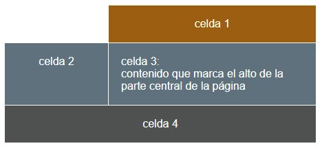

celda 1
celda 2
celda 3:
contenido que marca el alto de la parte cental de la páginia
contenido que marca el alto de la parte cental de la páginia
celda 4
La particularidad de este ejercicio es que el hueco que se ve en lo que sería la celda de la fila 1 y columna 1 está en blanco por que no existe. Realiza la distribución del contenido con el grid procurando mantener la relación de anchos. En el código HTML las celdas con el texto celda xx son los elementos escritos como bloques div. La alineación del texto al centro es un estilo CSS com el color o el fondo. La linea entre celdas es un gap de 1px. Intenta lograr el mismo aspecto que la figura.
